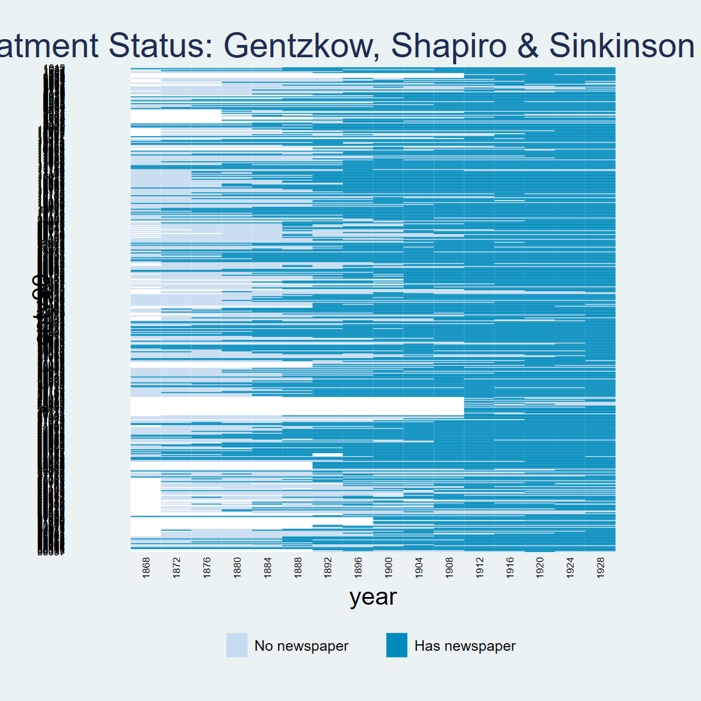
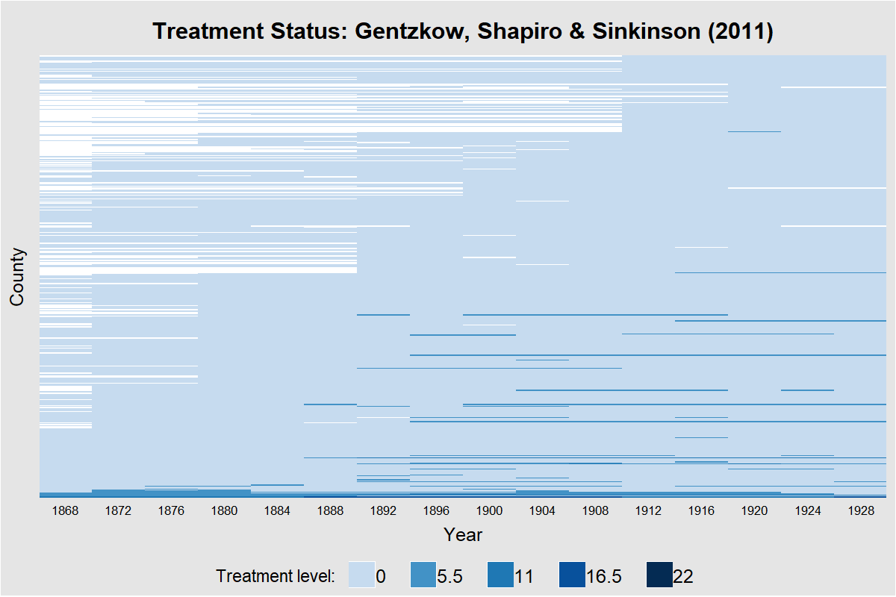
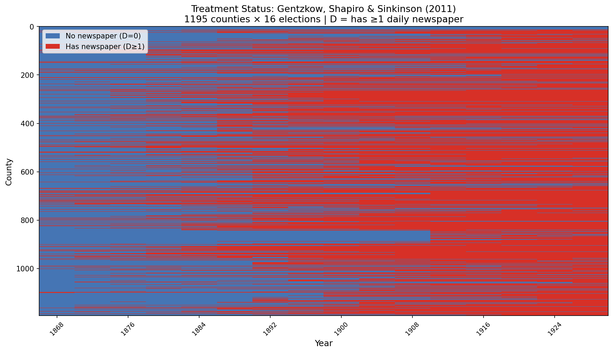

3 Chapter 5: TWFE Estimators Outside of the Classical Design
3.1 Overview
Dataset: Gentzkow, Shapiro & Sinkinson (2011) — gentzkowetal_didtextbook.dta
This chapter investigates what the TWFE estimator \(\hat{\beta}^{fe}\) estimates outside the classical design, using the effect of newspapers on voter turnout. The design features a non-binary treatment (number of newspapers), non-absorbing treatment changes, and variation in treatment timing across 1,195 US counties from 1872 to 1928.
Key tool: the twowayfeweights package (Stata/R) decomposes \(\hat{\beta}^{fe}\) into a weighted sum of treatment effects, where some weights may be negative — meaning \(\hat{\beta}^{fe}\) may not estimate a convex combination of effects.
No event-study plots in this chapter — only numerical outputs from regressions and decompositions.
3.2 Panel View
* ssc install panelview, replace
copy "https://raw.githubusercontent.com/anzonyquispe/did_book/main/cc_xd_didtextbook_2025_9_30/Data%20sets/Gentzkow%20et%20al%202011/gentzkowetal_didtextbook.dta" "gentzkowetal_didtextbook.dta", replace
use "gentzkowetal_didtextbook.dta", clear
panelview prestout has_newspaper, i(cnty90) t(year) type(treat) title("Treatment Status: Gentzkow, Shapiro & Sinkinson (2011)") legend(label(1 "No newspaper") label(2 "Has newspaper")) ylabel(none) ytitle("")
graph export "figures/ch05_panelview_stata.png", replace width(1200)
library(panelView)
load(url("https://raw.githubusercontent.com/anzonyquispe/did_book/main/cc_xd_didtextbook_2025_9_30/Data%20sets/Gentzkow%20et%20al%202011/gentzkowetal_didtextbook.RData"))
png("figures/ch05_panelview_R.png", width = 1000, height = 600)
panelview(prestout ~ numdailies, data = df, index = c("cnty90", "year"), type = "treat",
main = "Gentzkow, Shapiro & Sinkinson (2011)", ylab = "")
dev.off()
import pandas as pd
import matplotlib.pyplot as plt
import matplotlib.colors as mcolors
from matplotlib.patches import Patch
df = pd.read_parquet("https://raw.githubusercontent.com/anzonyquispe/did_book/main/cc_xd_didtextbook_2025_9_30/Data%20sets/Gentzkow%20et%20al%202011/gentzkowetal_didtextbook.parquet")
df["has_newspaper"] = (df["numdailies"] > 0).astype(int)
pv = df.pivot_table(index="cnty90", columns="year", values="has_newspaper", aggfunc="first")
pv_sorted = pv.loc[pv.mean(axis=1).sort_values(ascending=False).index]
cmap = mcolors.ListedColormap(["#D4E6F1", "#2171B5"])
fig, ax = plt.subplots(figsize=(12, 10))
ax.imshow(pv_sorted.values, aspect="auto", cmap=cmap, interpolation="nearest", vmin=0, vmax=1)
for i in range(0, len(pv_sorted), 10):
ax.axhline(y=i - 0.5, color="white", linewidth=0.15)
ax.set_xticks(range(0, len(pv_sorted.columns), 2))
ax.set_xticklabels([int(c) for c in pv_sorted.columns[::2]], rotation=45, ha="right", fontsize=8)
ax.set_yticks([])
ax.set_xlabel("year")
ax.set_title("Treatment Status: Gentzkow, Shapiro & Sinkinson (2011)", fontsize=16)
ax.legend(handles=[Patch(facecolor="#D4E6F1", edgecolor="gray", label="No newspaper"),
Patch(facecolor="#2171B5", edgecolor="gray", label="Has newspaper")],
loc="lower center", bbox_to_anchor=(0.5, -0.12), ncol=2)
plt.tight_layout()
plt.savefig("figures/ch05_panelview_Python.png", dpi=150, bbox_inches="tight")
plt.show()
3.3 5.6.1 Basic TWFE Regression
Regress turnout on number of newspapers and county and year FEs, clustering standard errors at the county level. Then decompose \(\hat{\beta}^{fe}\) using twowayfeweights.
copy "https://raw.githubusercontent.com/anzonyquispe/did_book/main/cc_xd_didtextbook_2025_9_30/Data%20sets/Gentzkow%20et%20al%202011/gentzkowetal_didtextbook.dta" "gentzkowetal_didtextbook.dta", replace
use "gentzkowetal_didtextbook.dta", clear
areg prestout i.year numdailies, absorb(cnty90) cluster(cnty90)Linear regression, absorbing indicators Number of obs = 16,872
Absorbed variable: cnty90 No. of categories = 1,195
F(16, 1194) = 310.47
Prob > F = 0.0000
R-squared = 0.7006
Adj R-squared = 0.6774
Root MSE = 0.1255
(Std. err. adjusted for 1,195 clusters in cnty90)
------------------------------------------------------------------------------
| Robust
prestout | Coefficient std. err. t P>|t| [95% conf. interval]
-------------+----------------------------------------------------------------
year |
1872 | -.0117399 .0084998 -1.38 0.167 -.0284162 .0049364
1876 | .0682968 .0079161 8.63 0.000 .0527658 .0838278
1880 | .0707524 .0084285 8.39 0.000 .0542160 .0872888
1884 | .0743330 .0093760 7.93 0.000 .0559377 .0927284
1888 | .0837409 .0095892 8.73 0.000 .0649273 .1025545
1892 | .0409980 .0096998 4.23 0.000 .0219675 .0600285
1896 | .0730286 .0106514 6.86 0.000 .0521311 .0939262
1900 | .0143816 .0112282 1.28 0.200 -.0076475 .0364107
1904 | -.0782734 .0109829 -7.13 0.000 -.0998212 -.0567255
1908 | -.0663333 .0111551 -5.95 0.000 -.0882192 -.0444474
1912 | -.1294217 .0110474 -11.72 0.000 -.1510962 -.1077473
1916 | -.0910842 .0111088 -8.20 0.000 -.1128791 -.0692893
1920 | -.1519845 .0108909 -13.96 0.000 -.1733520 -.1306170
1924 | -.1649369 .0109407 -15.08 0.000 -.1864020 -.1434718
1928 | -.1102546 .0108236 -10.19 0.000 -.1314900 -.0890193
|
numdailies | .0029393 .0016283 1.81 0.071 -.0002553 .0061339
_cons | .6764326 .0082986 81.51 0.000 .6601511 .6927140
------------------------------------------------------------------------------* ssc install twowayfeweights, replace
copy "https://raw.githubusercontent.com/anzonyquispe/did_book/main/cc_xd_didtextbook_2025_9_30/Data%20sets/Gentzkow%20et%20al%202011/gentzkowetal_didtextbook.dta" "gentzkowetal_didtextbook.dta", replace
use "gentzkowetal_didtextbook.dta", clear
twowayfeweights prestout cnty90 year numdailies, type(feTR)Under the common trends assumption,
the TWFE coefficient beta, equal to 0.0029, estimates a weighted sum of 10378 ATTs.
6180 ATTs receive a positive weight, and 4198 receive a negative weight.
------------------------------------------------
Treat. var: numdailies # ATTs Σ weights
------------------------------------------------
Positive weights 6180 1.4740
Negative weights 4198 -0.4740
------------------------------------------------
Total 10378 1.0000
------------------------------------------------library(haven); library(fixest)
load(url("https://raw.githubusercontent.com/anzonyquispe/did_book/main/cc_xd_didtextbook_2025_9_30/Data%20sets/Gentzkow%20et%20al%202011/gentzkowetal_didtextbook.RData"))
model1 <- feols(prestout ~ numdailies + i(year) | cnty90,
data = df, cluster = ~cnty90,
ssc = ssc(fixef.K = "full"))Dep. var.: prestout | Obs: 16872 | FE: cnty90 | Cluster: cnty90
------------------------------------------------------------------------------------------
Variable Coefficient Std. Err. t value Pr(>|t|) 2.5% 97.5%
------------------------------------------------------------------------------------------
numdailies 0.0029393 0.0016283 1.81 0.071 -0.0002553 0.0061339
year::1872 -0.0117399 0.0084998 -1.38 0.167 -0.0284162 0.0049364
year::1876 0.0682968 0.0079161 8.63 0.000 0.0527658 0.0838278
year::1880 0.0707524 0.0084285 8.39 0.000 0.0542160 0.0872888
year::1884 0.0743330 0.0093760 7.93 0.000 0.0559377 0.0927284
year::1888 0.0837409 0.0095892 8.73 0.000 0.0649273 0.1025545
year::1892 0.0409980 0.0096998 4.23 0.000 0.0219675 0.0600285
year::1896 0.0730286 0.0106514 6.86 0.000 0.0521311 0.0939262
year::1900 0.0143816 0.0112282 1.28 0.200 -0.0076475 0.0364107
year::1904 -0.0782734 0.0109829 -7.13 0.000 -0.0998212 -0.0567255
year::1908 -0.0663333 0.0111551 -5.95 0.000 -0.0882192 -0.0444474
year::1912 -0.1294217 0.0110474 -11.72 0.000 -0.1510962 -0.1077473
year::1916 -0.0910842 0.0111088 -8.20 0.000 -0.1128791 -0.0692893
year::1920 -0.1519845 0.0108909 -13.96 0.000 -0.1733520 -0.1306170
year::1924 -0.1649369 0.0109407 -15.08 0.000 -0.1864020 -0.1434718
year::1928 -0.1102546 0.0108236 -10.19 0.000 -0.1314900 -0.0890193
------------------------------------------------------------------------------------------library(haven); library(TwoWayFEWeights)
load(url("https://raw.githubusercontent.com/anzonyquispe/did_book/main/cc_xd_didtextbook_2025_9_30/Data%20sets/Gentzkow%20et%20al%202011/gentzkowetal_didtextbook.RData"))
decomp1 <- twowayfeweights(df, "prestout", "cnty90", "year",
"numdailies", type = "feTR")Under the common trends assumption,
the TWFE coefficient beta, equal to 0.0029, estimates a weighted sum of 10378 ATTs.
6180 ATTs receive a positive weight, and 4198 receive a negative weight.
Treat. var: numdailies ATTs Σ weights
Positive weights 6180 1.474
Negative weights 4198 -0.474
Total 10378 1import pandas as pd
import pyfixest as pf
df = pd.read_parquet("https://raw.githubusercontent.com/anzonyquispe/did_book/main/cc_xd_didtextbook_2025_9_30/Data%20sets/Gentzkow%20et%20al%202011/gentzkowetal_didtextbook.parquet")
m1 = pf.feols(
"prestout ~ numdailies + C(year) | cnty90",
data=df,
vcov={"CRV1": "cnty90"},
ssc=pf.ssc(adj=True, fixef_k="full", cluster_adj=True)
)Dep. var.: prestout
Observations: 16872
Fixed effects: cnty90
Cluster var: cnty90
--------------------------------------------------------------------------------
Variable Coefficient Std. Err. t P>|t| [95% CI]
--------------------------------------------------------------------------------
numdailies 0.0029393 0.0016283 1.81 0.071 [-0.0002521, 0.0061308]
year::1872 -0.0117399 0.0084998 -1.38 0.167 [-0.0283996, 0.0049198]
year::1876 0.0682968 0.0079161 8.63 0.000 [ 0.0527813, 0.0838123]
year::1880 0.0707524 0.0084285 8.39 0.000 [ 0.0542325, 0.0872723]
year::1884 0.0743330 0.0093760 7.93 0.000 [ 0.0559560, 0.0927101]
year::1888 0.0837409 0.0095892 8.73 0.000 [ 0.0649460, 0.1025357]
year::1892 0.0409980 0.0096998 4.23 0.000 [ 0.0219864, 0.0600096]
year::1896 0.0730286 0.0106514 6.86 0.000 [ 0.0521519, 0.0939054]
year::1900 0.0143816 0.0112282 1.28 0.200 [-0.0076256, 0.0363888]
year::1904 -0.0782734 0.0109829 -7.13 0.000 [-0.0997998, -0.0567469]
year::1908 -0.0663333 0.0111551 -5.95 0.000 [-0.0881974, -0.0444692]
year::1912 -0.1294217 0.0110474 -11.72 0.000 [-0.1510746, -0.1077688]
year::1916 -0.0910842 0.0111088 -8.20 0.000 [-0.1128574, -0.0693110]
year::1920 -0.1519845 0.0108909 -13.96 0.000 [-0.1733307, -0.1306383]
year::1924 -0.1649369 0.0109407 -15.08 0.000 [-0.1863807, -0.1434932]
year::1928 -0.1102546 0.0108236 -10.19 0.000 [-0.1314688, -0.0890405]
--------------------------------------------------------------------------------import pandas as pd
from twowayfeweights import twowayfeweights
df = pd.read_parquet("https://raw.githubusercontent.com/anzonyquispe/did_book/main/cc_xd_didtextbook_2025_9_30/Data%20sets/Gentzkow%20et%20al%202011/gentzkowetal_didtextbook.parquet")
result = twowayfeweights(df, "prestout", "cnty90", "year", "numdailies",
type="feTR")Under the common trends assumption,
beta estimates a weighted sum of 10378 ATTs.
6180 ATTs receive a positive weight, and 4198 receive a negative weight.
------------------------------------------------
Treat. var: numdailies # ATTs Σ weights
------------------------------------------------
Positive weights 6180 1.4740
Negative weights 4198 -0.4740
------------------------------------------------
Total 10378 1.0000
------------------------------------------------3.4 5.6.2 TWFE Regression with State-Year FEs
Regress turnout on number of newspapers and county, year, and state-year FEs. Then decompose using twowayfeweights with the controls option.
copy "https://raw.githubusercontent.com/anzonyquispe/did_book/main/cc_xd_didtextbook_2025_9_30/Data%20sets/Gentzkow%20et%20al%202011/gentzkowetal_didtextbook.dta" "gentzkowetal_didtextbook.dta", replace
use "gentzkowetal_didtextbook.dta", clear
qui tab styr, gen(styr)
qui areg prestout i.year i.styr numdailies, absorb(cnty90) cluster(cnty90)
display "numdailies: coef = " %12.7f _b[numdailies] " se = " %12.7f _se[numdailies]numdailies: coef = -0.0012122 se = 0.0010962 t = -1.10578* ssc install twowayfeweights, replace
copy "https://raw.githubusercontent.com/anzonyquispe/did_book/main/cc_xd_didtextbook_2025_9_30/Data%20sets/Gentzkow%20et%20al%202011/gentzkowetal_didtextbook.dta" "gentzkowetal_didtextbook.dta", replace
use "gentzkowetal_didtextbook.dta", clear
twowayfeweights prestout cnty90 year numdailies, type(feTR) controls(styr1-styr683)Under the common trends assumption,
the TWFE coefficient beta, equal to -0.0012, estimates a weighted sum of 10342 ATTs.
6195 ATTs receive a positive weight, and 4147 receive a negative weight.
10378 (g,t) cells receive the treatment, but the ATTs of 36 cells receive a weight equal to zero.
------------------------------------------------
Treat. var: numdailies # ATTs Σ weights
------------------------------------------------
Positive weights 6195 1.5331
Negative weights 4147 -0.5331
------------------------------------------------
Total 10342 1.0000
------------------------------------------------library(haven)
load(url("https://raw.githubusercontent.com/anzonyquispe/did_book/main/cc_xd_didtextbook_2025_9_30/Data%20sets/Gentzkow%20et%20al%202011/gentzkowetal_didtextbook.RData"))
model2 <- feols(prestout ~ numdailies + i(year) + i(styr) | cnty90,
data = df, cluster = ~cnty90,
ssc = ssc(fixef.K = "full"))numdailies: coef = -0.0012122 se = 0.0010962 t = -1.10578library(haven)
load(url("https://raw.githubusercontent.com/anzonyquispe/did_book/main/cc_xd_didtextbook_2025_9_30/Data%20sets/Gentzkow%20et%20al%202011/gentzkowetal_didtextbook.RData"))
decomp2 <- twowayfeweights(df, "prestout", "cnty90", "year",
"numdailies", type = "feTR",
controls = styr_cols)Under the common trends assumption,
the TWFE coefficient beta, equal to -0.0012, estimates a weighted sum of 10342 ATTs.
6195 ATTs receive a positive weight, and 4147 receive a negative weight.
10378 (g,t) cells receive the treatment, but the ATTs of 36 cells receive a weight equal to zero.
Treat. var: numdailies ATTs Σ weights
Positive weights 6195 1.5331
Negative weights 4147 -0.5331
Total 10342 1import pandas as pd
df = pd.read_parquet("https://raw.githubusercontent.com/anzonyquispe/did_book/main/cc_xd_didtextbook_2025_9_30/Data%20sets/Gentzkow%20et%20al%202011/gentzkowetal_didtextbook.parquet")
m2 = pf.feols(
"prestout ~ numdailies + C(year) + C(styr) | cnty90",
data=df,
vcov={"CRV1": "cnty90"},
ssc=pf.ssc(adj=True, fixef_k="full", cluster_adj=True)
)numdailies: coef = -0.0012122 se = 0.0010962 t = -1.10578
(year and state-year FEs absorbed, not shown)import pandas as pd
df = pd.read_parquet("https://raw.githubusercontent.com/anzonyquispe/did_book/main/cc_xd_didtextbook_2025_9_30/Data%20sets/Gentzkow%20et%20al%202011/gentzkowetal_didtextbook.parquet")
# Decomposition with state-year controls
styr_cols = sorted([c for c in df.columns if c.startswith("styr") and c != "styr"])
result = twowayfeweights(df, "prestout", "cnty90", "year", "numdailies",
type="feTR", controls=styr_cols)Under the common trends assumption,
beta estimates a weighted sum of 10342 ATTs.
6195 ATTs receive a positive weight, and 4147 receive a negative weight.
36 ATTs receive a weight equal to 0.
------------------------------------------------
Treat. var: numdailies # ATTs Σ weights
------------------------------------------------
Positive weights 6195 1.5331
Negative weights 4147 -0.5331
------------------------------------------------
Total 10342 1.0000
------------------------------------------------3.5 5.6.3 FD Regression with State-Year FEs
Regress the change in turnout on the change in number of newspapers and state-year FEs. Decompose using twowayfeweights with type(fdTR), and test if weights are correlated with the year variable.
copy "https://raw.githubusercontent.com/anzonyquispe/did_book/main/cc_xd_didtextbook_2025_9_30/Data%20sets/Gentzkow%20et%20al%202011/gentzkowetal_didtextbook.dta" "gentzkowetal_didtextbook.dta", replace
use "gentzkowetal_didtextbook.dta", clear
areg changeprestout changedailies, absorb(styr) cluster(cnty90)Linear regression, absorbing indicators Number of obs = 15,627
Absorbed variable: styr No. of categories = 634
F(1, 1194) = 7.68
Prob > F = 0.0057
R-squared = 0.5690
Adj R-squared = 0.5507
Root MSE = 0.0816
(Std. err. adjusted for 1,195 clusters in cnty90)
-------------------------------------------------------------------------------
| Robust
changeprest~t | Coefficient std. err. t P>|t| [95% conf. interval]
--------------+----------------------------------------------------------------
changedailies | .0025907 .0009351 2.77 0.006 .0007561 .0044252
_cons | -.0072455 .0003658 -19.81 0.000 -.0079632 -.0065278
-------------------------------------------------------------------------------* ssc install twowayfeweights, replace
copy "https://raw.githubusercontent.com/anzonyquispe/did_book/main/cc_xd_didtextbook_2025_9_30/Data%20sets/Gentzkow%20et%20al%202011/gentzkowetal_didtextbook.dta" "gentzkowetal_didtextbook.dta", replace
use "gentzkowetal_didtextbook.dta", clear
twowayfeweights changeprestout cnty90 year changedailies numdailies, type(fdTR) controls(styr1-styr683)Under the common trends assumption,
the TWFE coefficient beta, equal to 0.0026, estimates a weighted sum of 9876 ATTs.
5371 ATTs receive a positive weight, and 4505 receive a negative weight.
10378 (g,t) cells receive the treatment, but the ATTs of 502 cells receive a weight equal to zero.
------------------------------------------------
Treat. var: changedailies # ATTs Σ weights
------------------------------------------------
Positive weights 5371 2.4271
Negative weights 4505 -1.4271
------------------------------------------------
Total 9876 1.0000
------------------------------------------------* ssc install twowayfeweights, replace
copy "https://raw.githubusercontent.com/anzonyquispe/did_book/main/cc_xd_didtextbook_2025_9_30/Data%20sets/Gentzkow%20et%20al%202011/gentzkowetal_didtextbook.dta" "gentzkowetal_didtextbook.dta", replace
use "gentzkowetal_didtextbook.dta", clear
twowayfeweights changeprestout cnty90 year changedailies numdailies, type(fdTR) controls(styr1-styr683) test_random_weights(year)Regression of variables possibly correlated with the treatment effect on the weights
Coef SE t-stat Correlation
year -.1674271 .05101171 -3.2821307 -.0631614library(haven)
load(url("https://raw.githubusercontent.com/anzonyquispe/did_book/main/cc_xd_didtextbook_2025_9_30/Data%20sets/Gentzkow%20et%20al%202011/gentzkowetal_didtextbook.RData"))
model3 <- feols(changeprestout ~ changedailies | styr,
data = df, cluster = ~cnty90,
ssc = ssc(fixef.K = "full"))Dep. var.: changeprestout | Obs: 15607 | FE: styr | Cluster: cnty90
------------------------------------------------------------------------------------------
Variable Coefficient Std. Err. t value Pr(>|t|) 2.5% 97.5%
------------------------------------------------------------------------------------------
changedailies 0.0025907 0.0009345 2.77 0.0057 0.0007573 0.0044241
------------------------------------------------------------------------------------------library(haven)
load(url("https://raw.githubusercontent.com/anzonyquispe/did_book/main/cc_xd_didtextbook_2025_9_30/Data%20sets/Gentzkow%20et%20al%202011/gentzkowetal_didtextbook.RData"))
decomp3 <- twowayfeweights(df, "changeprestout", "cnty90", "year",
"changedailies", D0 = "numdailies",
type = "fdTR", controls = styr_cols)Under the common trends assumption,
the TWFE coefficient beta, equal to 0.0026, estimates a weighted sum of 9876 ATTs.
5371 ATTs receive a positive weight, and 4505 receive a negative weight.
10378 (g,t) cells receive the treatment, but the ATTs of 502 cells receive a weight equal to zero.
Treat. var: changedailies ATTs Σ weights
Positive weights 5371 2.4271
Negative weights 4505 -1.4271
Total 9876 1library(haven)
load(url("https://raw.githubusercontent.com/anzonyquispe/did_book/main/cc_xd_didtextbook_2025_9_30/Data%20sets/Gentzkow%20et%20al%202011/gentzkowetal_didtextbook.RData"))
decomp3_test <- twowayfeweights(df, "changeprestout", "cnty90", "year",
"changedailies", D0 = "numdailies",
type = "fdTR", controls = styr_cols,
test_random_weights = "year")Regression of variables possibly correlated with the treatment effect on the weights:
Coef SE t-stat Correlation
RW_year -0.1674271 0.05101171 -3.282131 -0.0631614import pandas as pd
df = pd.read_parquet("https://raw.githubusercontent.com/anzonyquispe/did_book/main/cc_xd_didtextbook_2025_9_30/Data%20sets/Gentzkow%20et%20al%202011/gentzkowetal_didtextbook.parquet")
m3 = pf.feols(
"changeprestout ~ changedailies | styr",
data=df,
vcov={"CRV1": "cnty90"},
ssc=pf.ssc(adj=True, fixef_k="full", cluster_adj=True),
fixef_rm="none"
)Dep. var.: changeprestout
Observations: 15627
Fixed effects: styr
Cluster var: cnty90
--------------------------------------------------------------------------------
Variable Coefficient Std. Err. t P>|t| [95% CI]
--------------------------------------------------------------------------------
changedailies 0.0025907 0.0009351 2.77 0.0057 [ 0.0007580, 0.0044234]
--------------------------------------------------------------------------------import pandas as pd
df = pd.read_parquet("https://raw.githubusercontent.com/anzonyquispe/did_book/main/cc_xd_didtextbook_2025_9_30/Data%20sets/Gentzkow%20et%20al%202011/gentzkowetal_didtextbook.parquet")
# FD weight decomposition (fdTR type)
result3 = twowayfeweights(df, "changeprestout", "cnty90", "year",
"changedailies", type="fdTR", D0="numdailies",
controls=styr_cols)Under the common trends assumption,
beta estimates a weighted sum of 9876 ATTs.
5371 ATTs receive a positive weight, and 4505 receive a negative weight.
502 ATTs receive a weight equal to 0.
------------------------------------------------
Treat. var: changedailies # ATTs Σ weights
------------------------------------------------
Positive weights 5371 2.4271
Negative weights 4505 -1.4271
------------------------------------------------
Total 9876 1.0000
------------------------------------------------import pandas as pd
df = pd.read_parquet("https://raw.githubusercontent.com/anzonyquispe/did_book/main/cc_xd_didtextbook_2025_9_30/Data%20sets/Gentzkow%20et%20al%202011/gentzkowetal_didtextbook.parquet")
# Test random weights (year)
result3b = twowayfeweights(df, "changeprestout", "cnty90", "year",
"changedailies", type="fdTR", D0="numdailies",
controls=styr_cols, test_random_weights="year")Regression of variables possibly correlated with the treatment effect on the weights
Coef SE t-stat Correlation
year -0.1674271 0.0510117 -3.2821306 -0.0631614